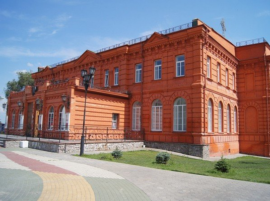
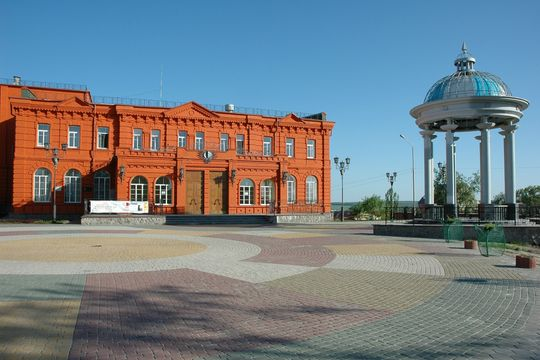
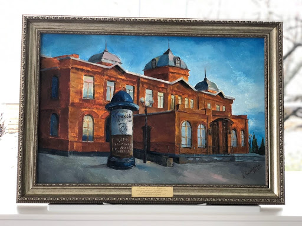

Старооскольский театр для детей и молодежи им. Б. И. Равенских
- Режим работы: с 11:30 до 19:00, по выходным: с 11:00 до 19:00, перерыв с 14:00 до 15:00.
Понедельник - выходной. - Цена за билет: уточняте в онлайн-кассе театра.
- Местоположение: ул. Ленина, 57, Старый Оскол, Белгородская обл.
Здание Оскольского театра для детей и молодёжи — памятник истории и архитектуры.
Здание, где ранее располагалось Старооскольское духовное училище, отстроенное в
1900 году на средства местных купцов и пожертвования прихожан, сохранилось до
наших дней.

Основой сегодняшней
труппы Старооскольского театра для детей и молодежи стал театральный коллектив,
созданный Виктором и Людмилой Оршанскими в Севастополе. 18 лет назад они приехали
на гастроли в Старый Оскол, где от администрации города им поступило предложение
остаться. Предложение было принято, и труппа актеров
обосновалась в театре.

Официально летопись Старооскольского театра для детей и молодежи берет свое начало
с 1 февраля 1996 года. Первым художественным руководителем театра стал Виктор Абрамович
Оршанский. В 1996 году актеры старооскольской труппы успешно оканчивают целевой курс
актерского мастерства при Ярославском государственном театральном институте.
Все они сегодня — ведущие мастера сцены Старооскольского театра.

27 января 1997 года при театре открылась и постоянно действует
детская театральная студия, многие из выпускников которой связали
свою жизнь с Театром.
Репертуар театра включает русскую и зарубежную классику, современную
драматургию, произведения для детей и подростков.
В театре работают три сцены: большой зал на 225 мест,
каминный зал на 75 мест, синий зал на 72 места.
Официальный сайт театра.